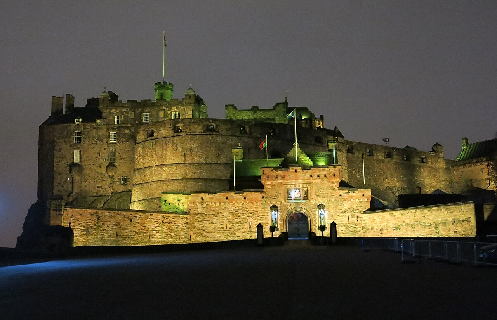

🗺️ Abrir circuito del día en Google Maps → · 10 paradas a pie por Old Town.
La premisa del día
Hoy bajamos por la Royal Mile del Castillo a Holyrood y nos metemos por debajo de la ciudad: subterráneos de Mary King’s Close, cementerio de Greyfriars con sus tumbas masónicas, el memorial de las brujas en Castle Hill, la sede de la Grand Lodge of Scotland y, si queda nafta, los Edinburgh Vaults de noche. La cena es la primera romántica del viaje: The Witchery by the Castle, que es literalmente lo que dice el nombre — un restaurante de candelabros y madera oscura en el lugar donde quemaban a las brujas.
Itinerario
06:30 [OPCIÓN PARA DANIELA / HIPERACTIVOS] Hike a Arthur’s Seat correr. La “silla de Arturo” es un volcán extinto de hace 350 millones de años que se levanta en pleno centro de Edimburgo, dentro de Holyrood Park. La cumbre está a 251 m y la subida desde el hotel ronda los 4-5 km ida y vuelta. Plan: salir a las 6:30, sunrise en mayo ~5:30 así que ya hay luz total. Dani sube corriendo, Matías camina a su ritmo. Foto en la cumbre con la ciudad debajo, baja relajada por el lado de Dunsapie Loch, vuelta al hotel ~8:30, ducha y desayuno. Ruta sugerida: subir por Salisbury Crags (escalonada, fotogénica), bajar por St Anthony’s Chapel (ruinas medievales en la ladera). Ver video aéreo y Wikipedia EN con perfil topográfico.
El nombre es un misterio: “Arthur’s Seat” puede venir del Rey Arturo (leyenda del s. XV) o de una corrupción del gaélico Àrd-na-Said (“altura de las flechas”). No hay consenso académico.
09:00 Desayuno corto en el hotel o en Cairngorm Coffee (Frederick St, 5 min andando). Para ya estar en Old Town al abrir.
10:00 The Real Mary King’s Close museo esoterico (Warriston’s Close, junto al City Chambers). Tour guiado de 1h por callejones subterráneos sellados en 1645 durante la peste bubónica. La Royal Exchange se construyó en 1753 sobre los pisos bajos de esos callejones, así que quedaron preservados. Hay habitaciones congeladas en el tiempo, sótanos de pescadería, cuartos donde murieron familias completas, y la famosa Annie’s Room (espíritu de niña al que la gente le deja juguetes desde los 90). Reservar online con anticipación; cupo limitado. Costo £25.
11:15 Camera Obscura & World of Illusions ciencia (Castlehill, junto a la explanada del castillo). La cámara oscura original de 1853: una habitación cilíndrica en la cumbre de la torre con un sistema de espejos que proyecta toda la ciudad en vivo sobre una mesa cóncava. Encima hay 6 pisos de ilusiones ópticas, salas de espejos, holografías. Mucho más serio de lo que parece desde afuera — es óptica victoriana funcional. 90 min. £22.
13:00 Almuerzo en Oink comida (Victoria Street o Canongate / Royal Mile). El hog roast sandwich clásico: lechón rostizado entero, lo cortan en rodajas, lo meten en un pan crocante con haggis o stuffing y salsa de manzana o BBQ. ~£8. Comer caminando o en escalones de algún close.
14:00 Edinburgh Castle museo esoterico. 2h-2h30. Lo imprescindible: Honours of Scotland (la corona, cetro y espada — más antigua que las Joyas de la Corona inglesa), Stone of Destiny (la piedra de coronación que Eduardo I se llevó en 1296 y devolvieron en 1996, sobre la que también se coronó Carlos III en 2023), St Margaret’s Chapel (1130, el edificio más antiguo de Edimburgo), el Great Hall con su techo de madera de 1511 y la National War Memorial. Antes de entrar al castillo, en la explanada, buscar el Witches’ Well esoterico — pequeña fuente de hierro fundido (1894) que es memorial a las ~300 mujeres quemadas vivas en Castle Hill entre 1479 y 1722 acusadas de brujería. Tiene cabezas duales (mala/buena bruja), flores de Foxglove (Digitalis — fuente de droga y veneno), y una serpiente enroscada (sabiduría / mal, ambivalente). Es uno de los memoriales feministas más viejos del UK.
16:30 Greyfriars Kirkyard esoterico (Candlemaker Row). Cementerio del s. XVI, todavía activo, con varias capas históricas:
- Greyfriars Bobby: estatua del Skye Terrier que durmió 14 años sobre la tumba de su dueño. Cuento sentimental disputado por historiadores.
- Covenanters’ Prison: en 1679, 1.200 prisioneros covenantes (presbiterianos rebeldes) fueron encerrados aquí en una jaula al aire libre durante 4 meses; cientos murieron. El sitio supuestamente está embrujado por Bloody George Mackenzie, el juez que los condenó (su mausoleo está al fondo).
- Tumbas con simbología masónica: cruces, compases, escuadras, ojos en triángulo. El Adam Family Mausoleum (William Adam, arquitecto, padre de Robert Adam) y la tumba de William Smellie (primer editor de la Enciclopedia Británica) son ejemplos. La masonería escocesa del s. XVIII funcionaba como red profesional + filosófica.
- Tom Riddell: una tumba con ese nombre (sin la “e” pero parecido) — J.K. Rowling vivía cerca y dicen que de ahí sacó el nombre del Voldemort joven. Mucho turismo Potter alrededor.
Tiempo: 45 min. Gratis.
17:30 Freemasons’ Hall esoterico (96 George Street, ~12 min andando hacia New Town). Sede de la Grand Lodge of Scotland, fundada 1736. El edificio actual es de 1912, neoclásico, con un Temple Room majestuoso. Tours guiados gratuitos cuando hay disponibilidad — verificar horarios y llamar antes: a veces requieren cita o solo abren ciertos días entre semana. Si está cerrado, se puede entrar al hall y comprar libros en la librería interna.
19:30 Cena ROMÁNTICA #1 — The Witchery by the Castle romántico (Castlehill, Royal Mile, justo en la entrada de la explanada). Reservado. Estilo: 2 salones, The Witchery (madera oscura, candelabros, tapices, atmósfera gótica) y The Secret Garden (más luminoso, jardín interno). Pedir el primero. Cocina escocesa moderna, pesado al lado europeo. Pedir: scallops con black pudding, beef Wellington, Cullen skink (sopa de pescado ahumado típica) o un platillo de vegetales de huerta escocesa. Carta de vinos enorme. ~£70-90 c/u con vino.
Alternativa más barata pero atmosférica: The Devil’s Advocate (Advocate’s Close, escaleras escondidas de la Royal Mile) — escocés moderno en un edificio que fue una vieja bomba de agua, alta carta de whisky.
22:30 Opcional noche: City of the Dead Ghost Tour o Auld Reekie Underground Tour. Salen ambos de Royal Mile, alrededor de £15. 1h-1h15. El de “City of the Dead” mete a los Edinburgh Vaults bajo South Bridge y al Black Mausoleum de Greyfriars donde supuestamente está George Mackenzie.
Si las pilas no dan, una pinta en el World’s End (Royal Mile, 4 High St) — un pub en el lugar donde la Flodden Wall (muro defensivo de 1513) marcaba el fin de la ciudad. Para los habitantes medievales, salir de ahí era literalmente el fin del mundo.
Material para leer en el día
El memorial de las brujas (Witches’ Well)
Entre 1563 y 1736 estaba vigente el Witchcraft Act escocés. Se estima que se ejecutaron entre 3.000 y 4.000 personas en Escocia (la cifra más alta per cápita de Europa), de las cuales más del 75% eran mujeres. Edimburgo concentró especialmente las ejecuciones en Castle Hill, donde primero se las estrangulaba (cuando había suerte) y después se las quemaba. James VI de Escocia / I de Inglaterra escribió personalmente un tratado, Daemonologie (1597), justificando la caza. Buena parte de la cosmología demonológica que terminó en Macbeth de Shakespeare viene de ese librito.
El Witches’ Well se inauguró en 1894 — uno de los memoriales más viejos. Está incrustado en una pared sin protagonismo. Hay un proyecto activo de la activista Claire Mitchell (Witches of Scotland) que pide perdón formal del Parlamento Escocés a las víctimas — se logró el perdón en 2022, pero el reconocimiento físico todavía es módico.
Masonería en Edimburgo
La Grand Lodge of Scotland se fundó en 1736 en una taberna llamada Mary’s Chapel que estaba en Niddry’s Wynd. Es la segunda más antigua del mundo (la primera fue Londres en 1717, pero los escoceses argumentan con razón que las lodges operativas — de canteros reales — son anteriores en Escocia; la Edinburgh Lodge No. 1 tiene registros desde 1599).
La distinción importante es entre:
- Masonería operativa: gremios reales de canteros medievales, con secretos técnicos (cómo cortar piedra, cómo levantar bóvedas), grado, palabras de paso para reconocerse entre canteros itinerantes.
- Masonería especulativa: la versión filosófica nacida entre los s. XVII y XVIII, que usa la simbología del cantero (escuadra, compás, plomada) como metáfora moral y de construcción del templo interno del individuo.
En Edimburgo conviven ambas tradiciones porque la Lodge No. 1 absorbió miembros no canteros desde fines del s. XVII (los llamaban gentlemen masons) y nunca dejó de funcionar. Robert Burns, James Boswell, Walter Scott y muchos protagonistas de la Ilustración eran miembros activos.
Ver el track esotérico completo para más.
Por qué Mary King’s Close está sellada
En 1645 hubo un brote de peste bubónica brutal. La teoría más sensacionalista dice que encerraron a los enfermos vivos y tapiaron los callejones. La realidad es más mundana: cuando se construyó la Royal Exchange (hoy City Chambers) en 1753, se demolieron las plantas superiores y se construyó por encima de las inferiores, dejando las plantas bajas convertidas en sótanos. El sello no fue sanitario sino arquitectónico. Lo de los espíritus vino después — la Annie’s Room se popularizó en los 90 cuando una médium japonesa visitó y dijo que sentía a una niña.
Pro tip: el Castillo abre a las 09:30 y se llena. Si en lugar de Mary King’s Close prefieren empezar con el Castillo, hacerlo a la primera hora. Después Mary King’s Close a la 11:00 o 12:00. Cualquier orden funciona; la clave es no quedarse en la cola de las 14:00.
Si llueve
Old Town es totalmente apta para lluvia: Mary King’s Close subterráneo, Camera Obscura cerrado, Castillo cubierto, Greyfriars con paraguas se hace, y todos los pubs son recintos. Cambio que vale la pena: Surgeons’ Hall (entrada cubierta) en lugar de Greyfriars si la lluvia es fuerte.
Comer y tomar hoy
Oink (Victoria St o Royal Mile)
Hog roast sandwich — clásico de street food.The Witchery by the Castle
Cena romántica gótica · reservar.The Devil’s Advocate
Cocktail + escocés moderno · plan B romántico.The World’s End
Pinta de cierre del día en Royal Mile.Logística
- Reservas necesarias HOY: Mary King’s Close, Witchery, opcional ghost tour.
- Costo aproximado: Mary King’s £25 + Castillo £22 + Camera Obscura £22 + Oink £8 + cena £80 + ghost tour £15 = ~£170 por persona.
- Caminata: 5-7 km en Old Town. El empedrado castiga.
- Calzado: zapatos con buena suela. La Royal Mile mojada es resbalosa.